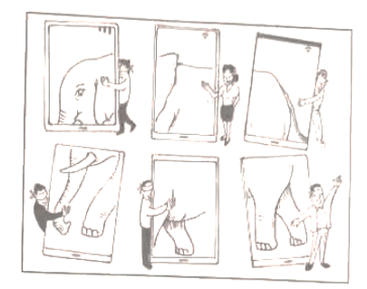
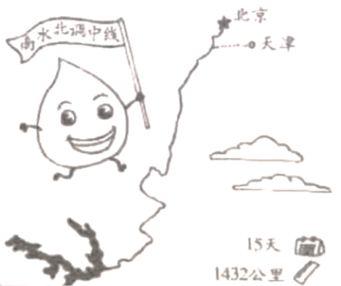
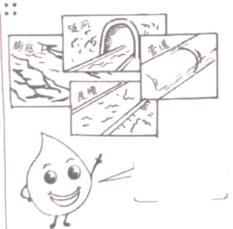
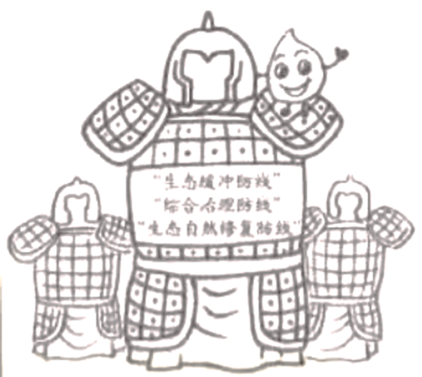
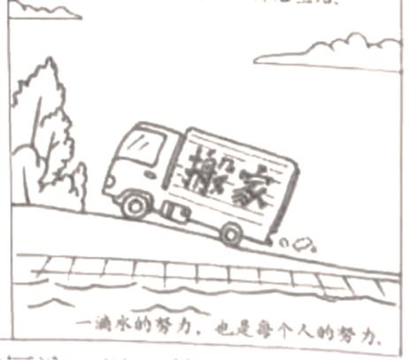
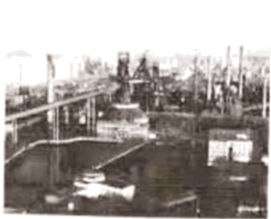

2021年北京市中考政治试题 原卷解析
2021年北京市初中学业水平考试
道德与法治试卷
第一部分
本部分共15题，每题2分，共30分。在每题列出的四个选项中，选出最符合题目要求的一项。
1. 2021年5月15日，天问一号探测器成功着陆于火星乌托邦平原南部预选着陆区。5月22日10时40分，____________号火星车已安全驶离着陆平台，到达火星表面，开始巡视探测。（ ）
A. 祝融B. 天和C. 墨子D. 悟空
【答案】A
【解析】
【详解】本题为时政题，解析略。
2. 下列选项最能概括两段对话内容的是（ ）
小明：奶奶，老师让我们学做一道菜，您教教我吧。 奶奶：好呀！我来教你。 | 奶奶：小明，这个新手机怎么用？你来教教奶奶。 小明：好！包教包会，免学费。 |
A. 孝敬长辈，体味亲情B. 热爱劳动，自立自强
C. 取长补短，共同进步D. 消除代沟，跨越年龄
【答案】C
【解析】
【详解】本题考查对孝亲敬长的正确认识。
C：从题文中小明和奶奶的对话中我们能感受到祖孙二人取长补短，共同进步的融洽氛围，C说法正确；
A：两段祖孙之间的对话不仅仅体现亲情，孝敬长辈，A说法与题不符；
B：小明想学做菜的行为是热爱劳动的表现，但不能体现出两段话的内容，B说法错误；
D：代沟不能消除，D说法错误；
故本题选C。
3. 现代生活越来越离不开手机，有人总结了几条手机使用注意事项。
·未经许可，请勿擅自翻看别人的手机。 ·在公共场合接听电话、听音乐、看剧、玩游戏时，不要大声外放。 ·随时随地拿起手机自拍，并不总是得体的行为，尤其在比较严肃的场合。 ·走路不要玩手机，尤其是下楼、过马路、处于路况复杂的路段时。 |
这些注意事项旨在（ ）
①降低安全风险，增强生命韧性 ②合理使用手机，保障社会秩序
③遵守社会公德，提升文明素养 ④尊重他人隐私，融洽人际关系
A. ①②B. ①③C. ②④D. ③④
【答案】D
【解析】
【详解】本题考查合理使用网络。
①②③④：未经许可，请勿擅自翻看别人的手机提醒我们要尊重他人的隐私权；在公共场合接听电话、听音乐、看剧、玩游戏时，不要大声外放；随时随地拿起手机自拍，并不总是得体的行为，尤其在比较严肃的场合警示我们要遵守社会公德，提升文明素养，维护社会秩序；走路不要玩手机，尤其是下楼、过马路、处于路况复杂的路段时警示我们要有生命意识，但题文中没有体现增强生命韧性的相关内容，①说法错误，②说法太绝对错误，③④说法正确；
故本题选D。
4. 孟子曰：“恻隐之心，仁之端也；羞恶之心，义之端也；辞让之心，礼之端也；是非之心，智之端也。”其中，“羞恶之心”告诉我们（ ）
A. 闻过即改，知耻后勇B. 海纳百川，有容乃大
C. 仁者爱人，推己及人D. 见贤思齐，止于至善
【答案】A
【解析】
【详解】本题考查对行己有耻的正确认识。
ABC：“恻隐之心，仁之端也；羞恶之心，义之端也；辞让之心，礼之端也；是非之心，智之端也”意思是同情心就是施行仁的开始；羞耻心就是施行义的开始；辞让心就是施行礼的开始；是非心就是智的开始。“羞恶之心”引导我们判断是非善恶，明确行为选择的理由。要做到行己有耻，能真诚地对自我，闻过而知礼，知耻而后勇，A说法正确；
BC：海纳百川，有容乃大体现的是辞让之心，仁者爱人，推己及人体现的是仁爱之心，B、C说法与题不符；
D：体现的是止于至善，做到极少承兑，积善成德，D说法与题不符；
故本题选A。
5. 《新“盲人摸象”》漫画启示我们（ ）

A. 网络信息无限，学会挑选信息B. 积极利用网络，获取新的知识
C. 多角度获取信息，认清事物真相D. 辨析网络信息，传播网络正能量
【答案】C
【解析】
【详解】本题考查合理利用网络。
AC：观察漫画内容可以看出我们要多角度获取信息，全面的掌握信息，了解事物真相，A说法错误，C说法正确；
B：互联网已经成为我们重要的学习工具和交往平台，我们要提高媒介素养，积极利用互联网获取新知，促进沟通，完善自我，B说法正确与题不符；
D：我们学会辨析网络信息，并在网上传播正能量，D说法正确与题不符；
故本题选C。
6. 对下列说法解读正确的是（ ）
| 说法 | 解读 |
A | 难过的时候抱抱自己，允许自己脆弱一会儿 | 情绪的表达会影响人际交往 |
B | 友谊是两颗心真诚相待 | 正确对待交友中受到的伤害 |
C | 成功易使人陶醉，莫把百尺当尽头 | 努力是梦想与现实间的桥梁 |
D | 一滴水只有放进大海里才永远不会干涸 | 个人不能离开集体单独生存 |
A. AB. BC. CD. D
【答案】C
【解析】
【详解】本题考查对课本基础知识 掌握和运用情况。
掌握和运用情况。
A：难过的时候抱抱自己，允许自己脆弱一会儿，说明我们要合理的表达自己的情绪，没有体现出情绪表达对他人的影响，A说法错误；
B：友谊是两颗心真诚相待体现了友谊需要真诚，与友谊的澄清的知识有关；正确对待交友中受到的伤害体现的是呵护友谊的方法，B说法错误；
C：成功易使人陶醉，莫把百尺当尽头体现要认识到比自己强的人还多得是，要不断勤奋地学习，C说法正确；
D：一滴水只有放进大海里才永远不会干涸意思是一个人只有当他把自己和集体事业融合在一起的时候才能最有力量，D说法错误；
故本题选C。
7. 某校学生以“全民守法，中学生在行动”为主题开展了模拟法庭、法治情景剧等活动，这些活动加深了学生对法律知识的理解。下列选项，中学生应该做的是（ ）
①努力 法治中国建设贡献力量 ②调解民间纠纷，维护公平正义
法治中国建设贡献力量 ②调解民间纠纷，维护公平正义
③升国旗时，面向国旗肃立致敬 ④法定职责必须为，法无授权不可为
A. ①②B. ①③C. ②④D. ③④
【答案】B
【解析】
【详解】本题考查对全民守法的正确认识。
①：中学生应该增强法律意识，做到尊法守法用法，努力为法治中国建设贡献力量 ，①说法正确；
②：学生没有调解民间纠纷的能力，②说法错误；
③：升国旗时，面向国旗肃立致敬是遵守国旗法的表现， ③说法正确；
④：行政机关要做到法定职责必须为，法无授权不可为，有权不能任性，④说法与题不符；
故本题选B。
8. 为落实《中华人民共和国反食品浪费法》，防止食品浪费行为，营造厉行节约的社会风尚，北京市民提出许多建议。下列建议，应由政府行使职权的是（ ）
A. 对造成严重食品浪费的企业主管人员予以诫勉
B. 加强监管，及时依法处理严重浪费食品事件
C. 落实“光盘行动”，提醒劝导消费者过量点餐取餐的行为
D. 加强对《中华人民共和国反食品浪费法》实施情况的检查
【答案】D
【解析】
【详解】本题考查正确认识依法行政。
A：纪委对造成严重食品浪费的企业主管人员予以诫勉，A说法错误；
B：执法机关要加大监管的力度，及时依法处理严重浪费食品事件，B说法错误；
C：服务员要落实“光盘行动”，提醒劝导消费者过量点餐取餐的行为，C说法错误；
D：国家行政机关是国家权力机关的执行机关，政府要加强对《中华人民共和国反食品浪费法》实施情况的检查，D说法正确；
故本题选D。
9. “乘客朋友们，欢迎您乘坐‘红色专车’。我们现在所在的地方是北大红楼，这里曾是新文化运动的大本营、五四运动的发源地、最早系统宣传马克思主义的红色阵地……”近期，北京公交集团开通了“红色专车”，为市民打造“流动的红色课堂”。此举（ ）
A. 将文化与生活相融合，实现各民族的文化交流
B. 有助于人们追寻革命先辈足迹，传承革命精神
C. 有利于中华文化兼收并蓄，在交流互鉴中发展
D. 丰富中华民族精神的内涵，展现红色文化魅力
【答案】B
【解析】
【详解】本题考查对民族精神的正确认识。
BD：北京公交集团开通了“红色专车”，为市民打造“流动的红色课堂”，有助于人们了解红色文化和革命文化，弘扬和传承民族精神，展现红色文化魅力题文中没有体现丰富中华民族精神的内涵的相关内容，B说法正确，D说法错误；
AC：题文中没有体现文化的交流互鉴，A、C说法错误；
故本题选B。
10. 对图理解正确的是（ ）

①不要害怕阴影，及时调整目标 ②换个角度思考，心中充满希望
③拒绝不良诱惑，努力向光而行 ④困难是暂时的，风雨后有彩虹
A. ①②B. ①③C. ②④D. ③④
【答案】C
【解析】
【详解】本题考查正确面对挫折。
②④：观察漫画内容，启示我们遇到困难时我们要勇敢的面对，困难是暂时的，换个角度思考，心中充满希望，风雨后有彩虹，②④说法正确；
①：漫画中体现的是要知难而进，努力实现自己的目标，而不是调整目标，①说法错误；
③：漫画中没有体现拒绝不良诱惑的相关内容，③说法错误；
故本题选C。
11. 小明登录北京市人民代表大会常务委员会官网，查阅到部分人大代表的建议。
首页>重要发布>重点工作>代表工作>建议公开>建议列表 第十五届第三次√ |
序号 | 建议标题 |
1 | 关于打通G7高速公路的建议 |
2 | 关于加快出台地方金融监管条例开展“蜜蜂行动”风险教育活动的建议 |
3 | 关于加快出台我市自然保护地实施意见的建议 |
4 | 关于吸引民企高管加入党组织增强高科技人才双向流动的建议 |
据此推断正确的是（ ）
A. 人大代表来自人民，依法行使国家权力
B. 人大代表深入调查研究，认真履职，对人民负责
C. 人大代表行使立法权，根据市民意愿制定相关法规
D. 人大代表拥有质询权，可以责令政府部门落实建议
【答案】B
【解析】
【详解】本题考查正确认识人大代表的职权。
AB：人大代表来自于人民，国家的一切权力属于人民，而不是人大代表，人大代表必须与人民群众保持密切联系，努力为人民服务，对人民负责，并接受人民监督，A说法错误，B说法正确；
C：全国人民代表大会享有立法权，C说法错误；
D：人大代表享有质询权，但不能要求政府落实建议，D说法错误；
故本题选B。
12. 北京的前门楼子不仅可以逛，现在还能“吃”。很多游客举者“前门楼子”冰棍与前门楼子来一张大小同框的合影，这已成为前门大街上的一景。游客表示冰棍虽然有点贵，但造型独特，“咱吃的不是冰棍，是文化。”对此，认识正确的是（ ）
A. 价格高造型巧，更能满足人们对美好生活的需要
B. 文化创意产品是对传统文化的创新性发展
C. 非物质文化遗产在现实生活中具有经济价值
D. 生活处处可创新，创新让生活更加丰富多彩
【答案】B
【解析】
【详解】本题考查发展中国特色社会主义文化。
A：价格高造型巧不是人们对美好生活需要的表现和要求，A说法错误；
B：“咱吃的不是冰棍，是文化”体现了文化创意产品是对传统文化的创新性发展，B说法正确；
C：题文中没有体现非物质文化遗产的经济价值，C说法错误；
D：体现的是创新的重要性，D说法正确与题不符；
故本题选B。
13.
在《中华人民共和国未成年人保护法（修订草案）》向社会征求意见时，我们通过调研，以自己的视角和方式提出修改意见，其中有一条修改意见被采纳，还收到了全国人大常委会法制工作委员会的感谢信，我们既兴奋又自豪。 |
以上是某校中学生在课堂上的一段分享，从中可以看出（ ）
①公民有序参与立法，旨 提升其法律专业素养
提升其法律专业素养
②公民积极行使监督权，体验感悟社会主义民主法治
③人大畅通民意反映渠道，让法律更好体现人民意志
④开门立法凝聚社会共识，增强公民对法治的信仰
A. ①②B. ①③C. ②④D. ③④
【答案】D
【解析】
【详解】本题考查对科学立法、民主立法的正确认识。
①：公民有序参与立法，目的不是提升法律专业素养，①说法错误；
②③④：向社会征求意见有利于公民行使批评建议，让法律更好体现人民意志，做到开门立法，增强公民对法治的信仰，②说法与题不符，③④说法正确；
故本题选D。
14. 2021年6月1日起实施的《中华人民共和国乡村振兴促进法》规定，每年农历秋分日为中国农民丰收节，乡镇人民政府应当指导和支持农村基层群众性自治组织规范化、制度化建设，国家完善城乡统筹的社会保障制度……该法填补了我国乡村振兴领域的立法空白，切实保障农民合法权益。该法的实施（ ）
A. 标志着全面实施乡村振兴战略有法可依
B. 有利于区域协调发展，消除城乡差别
C. 为促进广大农民共同富裕提供物质保障
D. 保障村民自治，完善我国的根本政治制度
【答案】A
【解析】
【详解】本题考查对科学立法的正确认识。
A：《中华人民共和国乡村振兴促进法》的实施，做到了科学立法，标志着全面实施乡村振兴战略有法可依，A说法正确；
B：有利于缩小城乡差别，促进区域协调发展，B说法错误；
C：为促进广大农民共同富裕提供法律保障，C说法错误；
D：我国的根本政治制度是人民代表大会制度，D说法错误；
故本题选A。
15. 中国加入世界贸易组织近20年，始终坚持将实现自身发展与促进世界共同发展相结合，对全球经济增长的年均贡献率接近30%，为全球经济交出了一份亮丽的成绩单。
上述材料表明（ ）
①世界经济发展不平衡现象仍然存在 ②我国对外开放水平不断提高
③中国日益成为世界经济发展的引擎 ④中国为各国提供广阔市场，推动世界多极化发展
A. ①②B. ①④C. ②③D. ③④
【答案】C
【解析】
【详解】本题考查正确认识世界舞台上的中国。
②③：观察图表中我国对外投资和利用外资的数据显示自己对全球经济增长的年均贡献率，可以看出我国对外开放水平不断提高，中国为世界经济增长注入了新的活力，是世界经济发展的引擎和稳定器，②③说法正确；
①：图表中体现的是我国的成就，①说法与题不符；
④：中国为各国提供广阔市场，推动经济全球化，④说法错误；
故本题选C
第二部分
本部分共5题，共40分。
16. 北京市举办了主题为“以邻为伴幸福社区”的“社区邻里节”。各社区开展了系列丰富多彩的活动，居民们纷纷走出家门，参与其中。
社区邻里节 | 邻里乐 | 社区跳蚤市场、趣味体育活动、社区电影节、包饺子擂台等活动。 |
邻里颂 | 歌舞联欢、社区摄影展、才艺书画秀、家庭情景剧等活动。 |
邻里情 | 走访困难群众、关爱独居老人、社区志愿服务等活动。 |
结合材料，运用所学知识，谈谈举办“社区邻里节”活动的意义。
【答案】可以促进邻里之间相互关心、相互帮助、和睦相处，形成和谐融洽的邻里关系。这有利于我们的生活、学习、工作，也给社区的发展带来积极影响；和谐的邻里关系是构建和谐社会的基石，是促进社会文明进步、人民安居乐业的前提之一；将社会主义核心价值观内化于心、外化于行。
【解析】
【详解】本题考查学生运用所学知识分析问题的能力。联系题文中社区开展的系列丰富多彩的活动，作用可围绕将社会主义核心价值观内化于心、外化于行；促进邻里之间相互关心、相互帮助、和睦相处，形成和谐融洽的邻里关系；有利于我们的生活、学习、工作，也给社区的发展带来积极影响；和谐的邻里关系是构建和谐社会的基石，是促进社会文明进步、人民安居乐业的前提之一等角度综合分析作答。
17. 一江清水北上千里，润泽亿万人。
我是南水北调中线的一滴水 | 如今，北京市民打开水龙头，其中70%以上的水，就是一路北上的我和小伙伴。 |  1432公里，15天，我从丹江口水库一路向北到达北京、天津。 |
 我见过的挑战和“科技范儿”十足的工程真不少。 |  人们关停了库区污染严重的企业，还设置了“三道防线” |  在此过程中，不少人离开故土，在新家园坚守希望、开启生活。 |
（1）吃水不忘掘井人。小小的一滴水，凝聚了多少深情厚谊！以“饮水思源”为主题，写一封感谢信。
要求：结合材料，运用相关知识，逻辑清晰，不少于100字，不得出现学校和姓名。
（2）千里之水来之不易，节水是最好的感恩。提出至少三条节水措施。
【答案】（1）感恩科技工作者的创新精神；感恩搬迁者的无私奉献精神；感恩建设者们的艰苦奋斗的精神；感恩党的正确领导等。
（2）循环用水，淘米水浇花；及时关闭水龙头；用中水洗车等。
【解析】
【详解】（1）本问以南水北调工程建设者、防护者、搬迁者等不同主体共同努力的场景为背景材料，创设图文并茂的情境，综合考查生态文明建设、科技创新等学科主干知识，同时考查学生全面提取信息能力、多角度分析问题能力、对学科观点准确理解及综合运用能力。开放性试题，只要学生写出感恩之情即可
（2）本问问旨在引导学生关注社会、关注生活，鼓励学生创造性提出基于学科知识的解决问题的措施，增强学生的公民意识，激发学生社会责任感。可从及时关闭水龙头；淘米水浇花；中水洗车等方面写出节水措施。
18. 2021年4月15日是我国第六个全民国家安全教育日，某校学生制作了“国家安全人人有责”主题展板。
展板一 | 国家安全领域 政治安全 国土安全 军事安全 经济安全 文化安全 社会安全 网络安全 生态安全 …… | 国家安全法第七十七条规定 （节选） ·遵守宪法、法律法规关于国家安全的有关规定； ·及时报告危害国家安全活动的线索； ·如实提供所知悉的涉及危害国家安全活动的证据 ·为国家安全工作提供便利条件或者其他协助 | 展板二 |
展板三 | 维护生态安全案例 杨某发现某自然保护区内有可疑人员活动，向有关机关举报。经查，这些可疑人员受境外机构指使，数十次赴我国多个自然保护区，非法采集上千种野生植物物种标本和种子样本，严重威胁我国生态安全，相关部门依法对其作出了处理。 |
维护国土安全案例 查果拉哨所尽管自然条件非常恶劣，但战士们“艰苦不怕吃苦，缺氧不缺精神”，坚守祖国的边关哨所，默默地奉献着。哨所组建以来，一代又一代官兵为了边关安全，心甘情愿在雪域高原为祖国站岗放哨。 | 展板四 |
结合展板内容，回答下列问题。
（1）今天，我国国家安全内涵和外延比历史上任何时候都更丰富，时空领域比历史上任何时候都更宽广，内外因素比历史上任何时候都更复杂，必须坚持______________观。
（2）运用所学知识，分析为什么“国家安全，人人有责”。
【答案】（1）总体国家安全观。
（2）国家安全与我们息息相关。①国家安全是国家生存与发展的重要保障。国家政权和主权受到威胁，国家的统一和领土完整遭到破坏，国家的生存就会受到挑战。国家安全有保障，经济社会才能不断发展，祖国才能更加繁荣富强。②国家安全是人民幸福安康的前提。只有国家安定，我们才能拥有良好的学习环境和生产、生活环境，生命安全、财产安全才能得到保障，才能获得安全感，进而创造更加美好的生活和未来。③只有人人为国家安全积极贡献力量，才能筑牢坚如磐石的堤坝，使危害国家安全的行为无法得逞。
【解析】
【详解】（1）本问考查对总体国家安全观的正确认识，考查学生的识记能力。依据所学知识可知在当今的时代背景下我们必须坚持总体国家安全观。
（2）本问考查“国家安全人人有责”的原因，间接考查国家安全的重要性。联系所学知识，围绕国家安全是国家生存与发展的重要保障；国家安全是人民幸福安康的前提；国家安全是实现国家利益最根本的保障，关系人民幸福、社会发展进步和中华民族伟大复兴；只有人人为国家安全积极贡献力量，才能筑牢坚如磐石的堤坝，使危害国家安全的行为无法得逞等角度作答。
19. “钢铁丛林”奏响冬奥序曲
上世纪70年代末的企业 |  2010年全面停产的企业 | 迎接冬奥的厂区一景 |
改革开放后，该企业在全国工业战线实行承包制，成为全国十大钢铁企业之一。1994年该企业钢产量位居全国第一，为我国的钢铁产业和首都城市建设做出重要贡献，在钢铁工业舞台上“秀”出了风采。 | 北京2008年奥运会申办成功后，该企业服从国家奥运战略和北京城市定位要求，将钢铁产业从北京搬迁到曹妃甸。同时该企业高质量完成了北京奥运会的“鸟巢”、奥运主火炬塔等多项奥运工程的建设任务。 | 2016年该企业以“双奥”身份再次让世界瞩目。以敦煌飞天为设计意象，将原冷却塔改造成滑雪大跳台；将原精煤车间变成国家冬季运动训练中心……作为冰雪冬奥的新地标，该企业“秀”出了奥运新风采。 |
（1）结合所学知识，分析该企业从“钢铁秀”到“奥运秀”说明了什么。
伴随着企业的转型，工人们面临着新的职业选择。有的远离家人，从北京前往曹妃甸，继续奋战在钢铁战线；有的选择留守。借助冬奥的契机，部分人员转型为冬奥服务人员，尽管工作岗位变了，但印刻在他们血液中“敢闯、敢坚持、敢于苦干硬干”的精神却没有改变。为了成为问不倒的讲解员，他们白天去档案馆查资料，晚上写讲解词，在家洗碗时也背词；为了成为冬奥制冰师，他们凭着不服输的精神，努力学习技术，熟练掌握了制冰的各项技巧，得到国际顶级制冰师的认可……这些人在平凡的岗位上书写着一个个不平凡的奋斗故事。
（2）结合材料，运用所学知识，谈谈这些人平凡中的不平凡。
【答案】（1）贯彻创新、绿色的新发展理念。
（2）为生活而努力，面对艰难考验，不放弃、不懈怠，为家庭的美好和社会的发展贡献自己的力量，书写自己的生命价值；生命虽然平凡，但也能时时创造伟大。志愿者们将个体生命和他人的、集体的、民族的、国家的甚至人类的命运联系在一起时，生命便会从平凡中闪耀出伟大。
【解析】
【详解】（1）本问以某企业与奥运的不解之缘为背景，引导学生以历史和发展的视角，看待首钢不同时期的发展定位，感悟并认同北京城市建设中贯彻创新、绿色的新发展理念，体会新时代的北京作为“双奥之城”的独特魅力。
（2）本问考查学生运用所学知识分析问题的能力。结合题文中因为企业转型而成为冬奥服务人员的工人们的行为，他们活出了生命的精彩，具体可从为生活而努力，面对艰难考验，不放弃、不懈怠，为家庭的美好和社会的发展贡献自己的力量，书写自己的生命价值；生命虽然平凡，但也能时时创造伟大。志愿者们将个体生命和他人的、集体的、民族的、国家的甚至人类的命运联系在一起时，生命便会从平凡中闪耀出伟大等角度作答。。
20. 胸怀千秋伟业，恰是百年风华。2021年中国共产党迎来百年华诞，全社会掀起了学党史的热潮。
在学党史中，同学们收集分享了两音民谣。
20世纪30年代革命战争时期，在中央根据地流传着一首民谣。 | 2020年我国脱贫攻坚战取得全面胜利 脱贫地区流传着一首新民谣。 |
苏区干部好作凤，自带干粮去办公 日着草鞋干革命，夜打灯笼访贫农； 苏区干部好作风，真心实意为群众， 柴米油盐都想到，问寒问暖情义重。 | 乡野路，田地旁，帮扶干部不辞忙； 填档卡，细思量，屈膝老妪如亲娘； 东家奔，西家访，不落一个送芬香； 白昼短，趁夜长，无愧百姓无愧党。 |
（1）对比两首民谣，运用所学知识对其共性进行分析说明。
学党史，唱红歌，同学们写下自己的感受。
| “为什么战旗美如画？英雄的鲜血染红了它。”中国共产党领导全国各族人民取得的伟大胜利是无数革命先烈用鲜血和生命换来的。从中国共产党成立到新中国建立，期间为革命牺牲的共产党员和仁人志士多达2100万，他们真正用行动诠释了“为有牺牲多壮志，敢叫日月换新天”的豪情与壮志，谱写了一曲曲荡气回肠的英雄壮歌。我们对“没有共产党就没有新中国”有了更深刻的理解。 |
“社会主义好，社会主义好，社会主义国家人民地位高。”放眼今日之中国，日新月异，蒸蒸日上。改革开放为中国发展注入活力，中国用几十年时间走完了发达国家几百年走过的工业化历程，跃升为世界第二大经济体，综合国力、国际影响力显著提升；人民生活由温饱不足到全面小康，区域性整体贫困得到解决，完成了消除绝对贫困的艰巨任务；社会和谐稳定、人民安居乐业。我们深刻地感受到中国特色社会主义为什么好。 | |
（2）运用所学知识，分析两位同学的感受体现了什么。
从党史学习中，同学们汲取前行的力量。
红色，是中国其产党、中华人民典和国最鲜明的底色。红色江山，热血铸就；红色基因，代代相传。
（3）永葆红色江山不变色，作为新时代中学生，我们该如何做？
【答案】（1）中国共产党坚持全心全意为人民服务；中国共产党是中国工人阶级额的先锋队，是中华民族和中国人民的先锋队；中国共产党坚持以人民为中心的发展思想；人民对美好生活的向往是党的奋斗目标；等等。
（2）中国共产党带领人民走上社会主义的发展道路，这是历史的选择，是人民的选择；中国特色社会主义是适合中国的独特的发展道路；只有共产党才能救中国，只有改革开放才能发展中国；改革开放是决定当代中国命运的关键抉择，是我国的强国富民之路等。
（3）热爱中国共产党，不忘党的恩情；拥护党的领导，听党话、跟党走，积极宣传党的政策；学习党的光辉历史，了解党的光辉传统，发扬艰苦奋斗、不怕吃苦、乐于奉献的优秀品质；努力学习科学文化知识，不断提高自身素质；树立远大理想，立志成才，长大为国家做贡献等。
【解析】
【详解】（1）本题以两则民谣为素材，通过革命战争年代以及当今的中国做对比，意在告诉我们中国共产党在领导中国革命以及建设的过程中都发挥了中流砥柱的作用，体现了中国共产党的宗旨、党的先进性、发展思想、奋斗目标等。围绕上述内容组织问题的答案。
（2）本题通过传唱红歌来具体体会对中国共产党与中国选择社会主义道路以及党带领人民进行改革开放的历史必然性进行分析。依据教材知识，我们主要应该围绕着社会主义道路是历史的选择，是人民的选择；中国特色社会主义是适合中国的独特的发展道路；只有共产党才能救中国，只有改革开放才能发展中国；改革开放是决定当代中国命运的关键抉择，是我国的强国富民之路等方面进行分析说明。
（3）本题考查对如何坚定跟党走的信念的认识和理解。依据教材知识，结合青少年的能力范围，从热爱党，不忘党的恩情；拥护党的领导，听党话、跟党走，积极宣传党的政策；学习党的光辉历史，了解党的光辉传统，发扬艰苦奋斗、不怕吃苦、乐于奉献的优秀品质；努力学习，不断提高自身素质；树立远大理想，立志成才等方面进行分析作答。